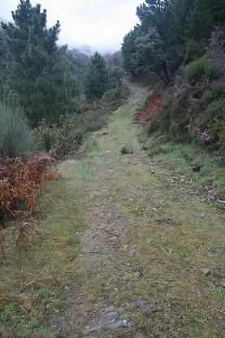
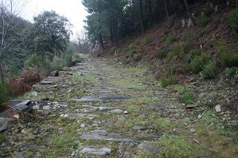

Robledillo de Gata
La primera referencia de sus habitantes es en el Bronce
Medio, época a la que pertenece el ídolo-estela hallado cerca del pueblo,
actualmente en el Museo Provincial de Cáceres.
De época romana destaca la antigua calzada que sube al Puerto Viejo de la que
quedan pocos restos, un ara votiva dedicada a Júpiter Óptimo y Máximo, que se
conserva en el muro de la epístola de la iglesia de Robledillo. Se conservan
cinco kilómetros de la Calzada.
|
 |
 La Vía Dalmacia era una vía secundaria que partía del Puente de Alconétar en el Tajo, unía a Coria con Ciudad Rodrigo y Salamanca, pasando por Portezuelo, Torrejoncillo... |
Se construyó para defender la calzada romana que, desde la
Vía de la Plata, cerca de Túrmulos, y pasando por Cauria (Coria) y Catóbriga
llegaba hasta la Miróbriga (Ciudad Rodrigo). Más tarde, en la Edad Media, esta
vía sería llamada Calzada de la Dalmacia.